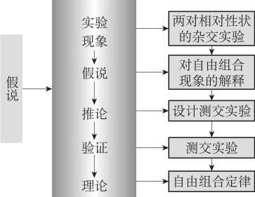

科学创新需要通过对科学现象的分析，提出问题、形成见解，在此基础上构建假说并且设计实验确证假说，然后得出结论并应用科学规律等。
科学假说是指根据已有的科学知识和新的科学事实对所研究的问题做出的一种猜测性陈述，是科学理论思维的一种重要形式。科学理论发展的历史就是假说的形成、发展和假说之间的竞争、更迭的历史。
科学发现的起点是科学研究者提出假说来解释自然现象，然后设计实验来检验这些假说，这种实验需要在可控条件下模拟自然现象。正如胡适提倡的科学方法是“大胆的假设，小心的求证”。
假说是根据已有的事实或知识，对未知的现象及其规律性做出假定并证明这个假定的思维过程。在日常生活经历中，几乎我们每个人都使用假说推理，通过构造假说来弄清情况，从而指导下一步的行动。
在科学研究中，假说可以理解为，在形成科学理论的过程中，开始构建理论雏形的那个阶段的设想。假说的内容构成通常是非常复杂的。它包含有理论的陈述，又包含有事实的陈述。而且，它既有真实性尚未判定的内容，又有比较确实的内容。
假说是科学发展的一种形式。各门科学在发展中，都曾提出过一定的科学假说。在天文学中，康德、拉普拉斯关于太阳系起源的星云假说，地质学中，李四光提出的地质力学的假说，物理学中关于原子结构各种模型的假说，化学中关于元素周期性变化的假说，生物学中达尔文提出的自然选择学说以及关于生物起源的海洋学说、生物遗传和变异的假说等等，都是根据已知的科学原理和科学材料，对未知的自然现象及其发展规律所做的假定性的解释。
假说是有待验证的解释。真正的科学理论，其中的每一个解释都是在合宜的证据，即事实的基础上提出的。当科研人员在对一组事实现象进行解释的时候，这些解释还期待着继续的试探和证实，这个时候的解释，就是科学的解释。这种科学的解释就是假说。
【案例】
运动增强免疫力吗？
有两个研究：
一个是某大学的研究人员把实验老鼠分为两组，一组在笼子里安逸地休息，一组则让它们奔跑到精疲力竭，像这样重复三天。然后让这些实验老鼠处于流感病毒环境中。几天后，狂奔的老鼠得流感的比例多于休息的老鼠，它们的症状也更重。
另一个研究是先让实验老鼠染上一种严重病毒，并将它们分成三组。然后让第一组老鼠休息，第二组做20~ 30分钟的适度慢跑运动，第三组跑2个半小时。重复这样的对比实验三天，直到它们开始表现出流感症状。结果，休息的老鼠死了一半以上，适度慢跑的只有12%死了，而跑2个半小时的老鼠死了70%，并且这一组中即使那些活下来的也比别的组的老鼠症状更重。
实验的结论是，适度运动对老鼠的免疫力有增强，比静止不动的好;但是如果运动到了精疲力竭的时候，老鼠的免疫力反而比静止不动的还低。
自然，这样的认识并不新鲜，大家早就晓得“适度运动”最好，还用你研究？确定运动程度和免疫力强弱的关系存在，只是科学研究的第一步。第二步，寻找因果解释才是要旨：为什么这样，运动怎样导致了免疫能力的变化，为什么运动过度反而抑制了人体的免疫能力。根据已有知识，科学家提出假说，认为应通过细胞的免疫作用来解释这个现象。
上述大学的科学家通过观察染病老鼠的细胞发现，适度锻炼的老鼠表现出一种非常特别的对病毒的免疫反应。一般而言，在老鼠和在人身上一样，病毒会引起所谓Thl型免疫细胞的增加。Thl型免疫细胞引起身体发炎等变化，成为抵抗病毒侵入的第一道防线。不过如果炎症时间太长，便会起反作用。免疫系统这时便需要减少由Thl型细胞引起的炎症反应，使之不会影响身体自身。因此免疫系统便逐渐增加另外一种细胞ThZ型细胞，由它们来产生抵抗炎症的免疫反应，等于向Thl型细胞引起的火上浇水。Thl和ThZ细胞之间的这种平衡很精致微妙。
在上述大学的实验中，适度运动的老鼠以精致的方式逐渐增加ThZ细胞的免疫反应，刚好产生正面的抵抗流感的作用。适度运动可以一点点地压制Thl细胞。而剧烈运动可能急速压制Thl细胞。
可见，科学探索的深层目标是形成关于因果机制的假说。
任何一门科学理论，假说都是不可少的。假说是通向新的科学理论的必要环节，是开拓科学新领域，打开科学宝库的钥匙。假说是观察、思考和实验的结果，又是进一步观察、思考和实验的起点。科学假说主要有以下基本特点：
科学假说是对自然奥秘的有根据的猜测，它是人类洞察自然的能力和智慧的高度表现。科学假说与宗教迷信等蒙昧无知之类的胡说是根本不同的。假说是在科学知识的土壤里生长的，任何假说的提出都以一定的相关事实作为支持它的经验证据，也以一定的相关原理作为论证它的理论前提。
科学假说对科学研究具有定向作用，是寻求真理的向导。既然假说是对未知的自然现象及其规律的一种科学的推测，那么，人们便可以根据这种推测确定自己的研究方向，进行有目的、有计划地观测和实验，避免盲目性和被动性，充分发挥主观能动性和理论思维的作用。因此也就有可能在科学上有所发现，有所突破。
推测性的基本思想和主要论点，是根据不够完善的科学知识和不够充分的事实材料推想出来的，它还不是对研究对象的确切可靠的认识。假说立足于事实，但又不受事实的局限，假说对未知对象提出大胆的设想，而又深入到实践当中去寻求答案。这样，也就能够不断地推动人们去探索、去突破，这就可能打开另一个新天地，获得惊人的发现。
科学假说是建立在一定实践经验的基础上，并经过了一定的科学验证的一种科学理论。它既与毫无事实根据的猜想、传说不同，也和缺乏科学论据的冥想、臆测有区别。确切地说，科学假说是科学性与推测性的对立与统一。它既包含着真，又包含着假，是真与假的对立与统一。它有可能失真而成为假，也有可能由假而转为真。因此，假说又是理论形成中的生与亡的对立统一。这种对立统一的转化条件在于实践，实践是检验假说的唯一客观标准。
人的认识过程是复杂曲折的，对假说的检验过程也呈现出复杂性和曲折性。预言的一次成功，并不能完全证实这一假说，但确实在一定程度上证明了或增添了它的真理性;预言的一次失败，也不一定能据此推翻这一假说，因为一个假说实际上总是和其他一些前提条件（或称辅助性假说）结合在一起导出某一预言的。即使是预言的完全失败，问题可能出在这一假说本身，也可能出在其他的条件方面，有时还要检查实践方式本身，例如实验仪器、实验操作乃至计算方法是否存在差错等等。科学的历史表明，曾经失败过的科学假说，随着时间的推移，在新的条件下也会“死而复生”;而获得成功的科学假说，也有可能重新陷入困境，需要加以改进，甚至要被新的假说所代替。
这里所说的可检验性指的是原则上的可检验性，而非技术上的可检验性。我们通过观察而获得假说，又通过对这些假说的验证增进我们对这个世界的理解。科学的每一个进步都是对假说予以验证的结果，科学的假说必须是可测试的，一个原则上不可检验的陈述是没有科学价值的。如果提出一个无法证实的构想，这就只是构想，因而就不是一个科学假说。可检验性是科学假说的必要条件，而对科学假说最有力的支持就是它所预言的事实为尔后的实践所证实。即人们可以继续为这个假设的科学理论提供证据，从而使之形成一个获得科研人员共识的科学理论。但是，即使一个假说经过检验形成了科学理论，它仍然需要继续接受检验，真正科研人员的科学信念必定不是教条式的。
有的假说根据目前的理论水平来看，是可以检验的，但由于技术上的条件尚未具备，检验不能立即实施，所以此假说具有原则上的可检验性，而不具备技术上的可检验性。假说的可检验性同假说的预言和推论紧密相连。如果一个假说不能做出任何预言，那它并不具备可检验性。相反，假说的推论和预言中可以被检验的越多，假说的优劣越易判断。
如果一个假说被制定得太广泛和普遍，以至于矛盾的证据也能为它进行确证，那么这个假说并不能真正地被任何东西所确认。哲学家卡尔·波普尔认为，任何真正的科学假说必须被足够严密地限定，以便它能避免这类问题的发生。也就是说，假说必须是能被证伪的。这就意味着为了使证据能反驳它们，假说应该被足够严密地限定。
假说的提出是以经验事实为依据的、对科学问题的解释。假说总是按照预先设定，对某种现象进行解释，即根据已知的科学事实和科学原理，对所研究的自然现象及其规律性提出说明，而且数据经过详细的分类、归纳与分析，得到一个可以被接受的解释。因而假说要尽可能地解释已有的科学事实。
假说的提出不仅可以解释已知的事实，更重要的是它还可以对未知的或对未来的事实做出推论。例如，大陆漂移说、广义相对论、大爆炸宇宙论等。但是，由于实践检验的历史局限性，由假说推出的论断虽然原则上可以检验，不过当时无法完成，要等待条件具备时才行。这就是说，假说预测的未知事实应当可以检验，但会受当时检验技术水平的限制。
假说演绎法又称为假说演绎推理，是现代科学研究中常用的一种科学方法。具体是指在观察和分析基础上提出问题以后，通过推理和想象提出解释问题的假说，根据假说进行演绎推理，再通过实验检验演绎推理的结论。如果实验结果与预期结论相符，就证明假说是正确的，反之，则说明假说是错误的。
其中，所谓演绎推理，是指从一般性的知识的前提推出一个特殊性的知识的结论这样一种推理方法，其前提和结论之间的联系是必然的，一个演绎推理只要前提真实并且推理形式正确，那么，其结论就必然真实。
构建和验证假说的步骤，就是进行假说演绎推理的常规步骤，是科学研究的一般模式，也是科学发现和验证的常用方法。可以分解成以下几个步骤或阶段。
科学研究总是开始于某个问题，通过观察现象、发现问题、提炼问题来提出所面临的科学问题。
①观察现象：通过观察、实验，发现反常、奇怪的事实、现象。
②发现问题：根据所观察到的现象，发现观念、理论的矛盾冲突。
③提炼问题：搜集一定数量的事实、资料，在分析和思考的基础上，从更本质的角度提炼出科学问题。
为回答问题，要充分运用各种有关的科学知识，并且灵活地展开归纳和演绎、分析和综合、类比和想象等各种思维活动，形成解答问题的基本观点，而这种观点常常表述为新的科学概念，并以此构成假说的核心。
①提出猜想：通过推理和想象进行猜想、猜测，提出解释问题的初始假说。
②收集证据：收集额外事实。
③修正假说：根据收集到的证据对初始假说进行一般检验，形成解释问题的修正假说。
④一般检验：检验假说对已知事实的解释。
⑤形成假说： 通过以上四个步骤循环往复，不断地修正并最终形成精致的假说。
根据构建出来的假说，进一步演绎并推出结论。
①根据假说对相关已知事实进行演绎推理，演绎出来的是个关于已知事实的陈述。
②根据假说对未知事实进行演绎推理，演绎出来的是个关于未知事实的陈述。
推出结果之后，要通过调查研究等手段，对结果进行检验。如果实验结果与预期结论相符，就初步证明假说是正确的，反之，则说明假说很可能是错误的。而检验要包括一般检验和严格检验两个阶段。
①一般检验：检验假说对已知事实的解释。
②严格检验：检验假说对未知事实的预见。
假说通过多次检验后，就具有了可接受性，在此基础上，在实践上可对该假说进一步应用。
①应用假说：运用经过多次检验并可接受的假说，来解释更多或推测出更多结果，在此过程中，假说本身也得到不断的检验。
②确立理论：假说如果得到不断验证就形成了科学理论，而科学理论可用来指导实践。
当然即使是公认的科学理论，也要在实践中继续得到检验、完善或修正，从而推动科学的不断进步。
当然不是说只有科研人员在使用科学方法，任何人只要遵循从可观察的事实和证据，推论出可通过经验检验的结论这样的一般的推理模式，都可以说成是在运用假说演绎法。
【案例】
寻找手机
在日常生活中，也经常用到假说演绎法，举个例子：
有一天你和一帮朋友在餐厅的一个包间内喝酒吃饭，饭局快结束时想起要打个电话，发现手机找不着了，你记得刚进包间的时候还用手机打过电话，而现在手机找不着了，找遍全身也没有，那么你会怎么想？
你首先会想是否掉在包间里了，或许在桌子底下，或许饭前喝茶时候掉在沙发底下。所以，你会怎么做？就是用你朋友的手机拨你的手机号，如果房间内响起你的手机铃声，那么说明手机在房间内，可以循着铃声找手机。但现在发现，手机是通的，但房间内没铃声。你推测，手机应该不会被偷，因为是包间，没外人来过。所以，要么手机之前被你自己静音了，还在房间里;要么被别人不小心拿走了。这时，有个朋友说，之前看见你的手机摆在你手头的桌面上。而你旁边的朋友因有事提前离席了，这时，你猜测，会不会那个朋友因喝多了，不小心把你的手机当自己的手机拿走了呢。如果是这样，可打电话问他，他会给以明确答复的。于是，你让在座的朋友给离席的那个朋友打电话，一问果然是那位朋友不小心把你的手机拿走了。
好了，我们来分析一下这个推理步骤：
①提出问题
手机丢了。
②提出假说
提出猜想：手机掉在包间里了。
收集证据：拨手机号，手机是通的，但房间内没铃声。而且你旁边的朋友因有事提前离席了。
修正假说：那个朋友因喝多了，不小心把你的手机当自己的手机拿走了。
③演绎推论
若那个朋友拿走了你的手机，你打电话问那个朋友，他会发现的。
④验证结果
打电话问那个朋友，果然是他不小心把你的手机带走了。
上述假说演绎法的步骤在抽象分析中它们易于区别，但在实践中它们绝不总是界限分明的，在许多情况下它们是相互渗透并混合在一起的。
假说演绎法的这几个基本步骤往往发生重叠和相互渗透，但是我们可以通过反思，从实际的科学研究中识别出来。
下面我们用孟德尔的豌豆实验这一科学案例来对假说演绎法的运用进行说明。
孟德尔是奥地利人，被誉为现代遗传学之父，他通过豌豆实验，发现了遗传规律、基因的分离规律及基因的自由组合规律。他的实验是假说演绎法的经典范例。
【案例】
生物遗传规律的发现
在1860年代，孟德尔用豌豆做杂交实验。豌豆中有高植株品种和矮植株品种，高植株与矮植株这是一对“相对性状”。拿这两个品种的植株做“亲代”杂交（用高植株作父本，矮植株作母本，或用矮植株作父本，高植株作母本），所得种子和它长成的植株（称为子一代）全部都是高植株。然后，拿子一代植株自花授粉，所得种子和它长成的植株（称为子二代，即孙代），其中有四分之三是高植株，而四分之一是矮植株，两者的比数为3∶1。
（1）提出问题
孟德尔经过分析与思考，提出了这样的问题：为什么杂交后的子一代全部都是高植株，而杂交后的子二代中高植株与矮植株的比数总是3∶1？孟德尔对豌豆的其他相对性状（红花与白花，黄种子与绿种子），也进行了类似的杂交实验，并仔细地作了统计记录，其结果与上述情形类同，存在着同类的问题。
（2）提出假说
孟德尔设想了以下假说来解答从豌豆杂交实验中所提出的问题：肉眼可以看到的生物体外表的性状是由肉眼看不到的生物体内部的遗传“因子”（后来被称为“基因”）控制着。
（3）演绎推论
如果高株品种的生殖细胞含有促成高株的某种东西，而矮株品种的生殖细胞含有促成矮株的某种东西，那么，杂种便应该具备这两种东西。现在，杂种既然是高株，由此可知两种东西会合时高者是显性，而矮者是隐性。孟德尔指出，用一个很简单的假说便可以解释第二代中3比1的现象。当卵子和花粉粒成熟时，如果促成高株的某种东西，同促成矮株的某种东西（两者在杂种内同时存在），彼此分离，那么，就会有半数的卵子含高要素，半数的卵子含矮要素。花粉粒也是如此。两种卵子同两种花粉粒都以同等的机会受精，平均会得到三高株和一矮株的比例，这是因为要素高同高会合，会产生高株;要素高同矮会合，产生高株;要素矮同高会合，产生高株;而要素矮同矮会合，则产生矮株。
（4）验证结果
①一般检验
孟德尔的遗传因子分离定律可以解释人眼虹彩颜色的遗传现象，并得到这个事实的支持。“碧眼人同碧眼人婚配，得碧眼子代。褐眼人同褐眼人婚配，如果两者的祖先都是褐眼，也只能产生褐眼子代。如果碧眼人同纯种褐眼人婚配，子女也都是褐眼。这一类褐眼的男女如果彼此婚配，其子女会是褐眼和碧眼，成3与1之比。”
②严格检验
孟德尔采用一个简单的方法来测验他的假说：让杂种回交，即把表面上显性的个体回头来同其隐性亲型个体交配的过程。目的在于揭露前者究竟是纯显性或者只是杂种。隐性型杂种的生殖细胞如果分高矮两型，那么，子代植物也应分高矮两型，各占半数。根据上述预言，进行实验，实验结果验证了预测。
（5）形成理论
当然，对假说的实践检验过程是很复杂的，不能单靠一两个实验来说明问题。事实上，孟德尔做的很多实验都得到了相似的结果，后来又有数位科学家做了许多与孟德尔实验相似的观察，大量的实验都验证了孟德尔假说的真实性之后，孟德尔假说最终发展为遗传学的经典理论。（根据百度百科整理）
【案例】
分离定律和自由组合定律的发现
科学实验发现事实，孟德尔以豌豆为实验材料进行了一对及两对相对性状的杂交实验，基本程序是：
第一步，以具有相对性状的亲本（P）杂交得F1
第二步，让F1自交得F2
第三步，对F2的性状表现进行统计分析
最后得出，性状分离比为3∶1（一对）或9∶3∶3∶1（两对）。
（1）提出问题
为什么F1表现一种性状， F2性状分离且呈现一定分离比呢？
（2）提出假说
如何解释上述现象，孟德尔通过推理，提出如下假说：
①在豌豆一对相对性状的两种亲本杂交实验中，发现F1表现一致， F2出现性状分离且分离比为3∶1的现象，提出对分离现象解释的假说： F1形成配子时，成对的遗传因子彼此分离，分别进入不同配子中，受精时，雌雄配子结合是随机的。
②做豌豆两对相对性状的杂交实验中，观察到F1表现一致， F2出现性状分离且分离比为9∶3∶3∶1的现象，提出对分离现象解释的假说： F1形成配子时，每对遗传因子彼此分离，不同对遗传因子自由组合， F1产生4种比例相等的配子。
（3）演绎推论
上述假说是否符合实际，其核心在于“F1产生的配子类型及比例”。根据假说演绎推理，隐性亲本只产生一种配子，不影响后代的表现型，如果让F1与隐性亲本杂交（即测交），所得后代表现型及其比例只与F1产生的配子有关，即一对相对性状时，后代表现型应为2种、比例为1∶1;两对时， F2表现型为4种、比例为1∶1∶1∶1。
（4）验证结果
根据上述推论，孟德尔进行了一对及两对相对性状的测交实验，所得后代的表现型及其比例与预期相符，证明了假说的正确性。
（5）形成理论
经过不断验证，形成了生物学中的分离定律和自由组合定律。（根据百度百科整理）

假说的构建涉及归纳、直觉甚至演绎等方法，一方面，科学假说的构建常常与经验事实结合，科学研究人员搜集经验证据，然后用归纳法来构建出科学假说和理论。另一方面，科学发现仅仅靠归纳是远远不够的。科学确实立足于经验事实，但科学的假说或理论并不只是来源于经验，假说总有它们的证据没有包括的东西，这就不符合归纳。因此，关于假说的构建在科学史上是有争论的。归纳主义者强调最好的假说是满足归纳法要求的，而假说主义者则强调假说要靠创造性的猜想、直觉来建立，也有人不管假说最初的产生，只把假说演绎法理解为一种科学解释的演绎模型。但不管怎么争论，从假说构建的步骤上，都包括认定问题和提出假说两大步骤。
科学发现也是一个解决问题的活动。首先是有了问题，再根据线索和知识进行分析，做出一个初步的猜测;然后根据这一猜测，进一步有目的有选择地来搜集有关材料，把细节片断联结成线，构成一个完整的因果过程，再进一步完善这个假说。
科学研究开始于某个问题，一个问题可以表示成一个或一组没有可接受的说明的事实。科研工作之前，问题必须被确定，或者至少以模糊的形式被确定。
首先，在进行科学研究时，应当认识到问题的存在。每当人们发现用原有的理论无法解释的事实时，特别是发现与原有理论相违背的反常事实时，也就是面临了疑难的问题。
其次，要把问题的非本质方面找出来，加以剔除。
再次，要分析产生问题的源头。产生问题的源头包括观察、实验、事实，新事实与旧理论的矛盾，事实之间的矛盾，理论自身的矛盾等等。
总之，假说的提出不是无缘无故的，它是用来回答特定的问题、解释一定的事实的。所以，一个假说必须论述存在着什么样的问题有待于人们解答。
【案例】
“以太”问题
19世纪末物理学面临着几个实验和理论上的疑问。
比如，当时人们认识到光和电磁波都是波，那么，就像声波依靠空气传播一样，光和电磁波都需要一个媒介，这就是“以太”的来历。
另外一个疑问是，电动力学和牛顿力学所遵从的相对性原理不一致。按照麦克斯韦理论，真空中电磁波的速度，也就是光的速度，是一个恒量。然而按照牛顿力学的速度加法原理，不同惯性系的光速不同。比如火车向你开来时，它头上的灯光向你射来的速度，应该是光速加上火车的速度，要比光速自己快一点;火车离开你时，它尾巴上的灯光向你射来的速度，应该是光速减去火车的速度，要比光速自己慢一点。但按照麦克斯韦理论，这种差别并不存在，不管火车开走还是开来，它的灯光射向你的速度一成不变都是光速。所以这两个理论体系是对立的。一些人试图用“以太”的概念来解释，比如电磁波的速度相对于“以太”是恒量，但相对于具体的环境（参照系）是变化的。
但是，一切企图寻找“以太”的实验都没有成功。包括著名的迈克耳孙一莫雷实验，人们怎么也找不到物体在这个媒介中运动的痕迹。这就是20多岁的爱因斯坦思考的聚焦点，也是他所认定的问题。
对科学问题网络的梳理和考察，将产生对科学问题的解答，提出相应的科学假说，它使人们已有的感性经验形成思路，更使人们进一步的观测研究具有方向。
为解决问题，科研人员就开始酝酿提出一个假说。科学假说是人们在探索错综复杂的自然界奥秘的过程中，用已获得的经验材料和已知的事实为根据，用已有的科学理论为指导，对未知自然界事物产生的原因及其运动规律做出推测性的解释。
在科学研究中，往往从实验中获取事实并进行归纳概括或合理想象（包括猜测、猜想），在此基础上提出猜想或初步假说，然后进一步收集证据，并进行一般检验，再修正假说，相成相对精致的假说。
基本认定问题之后，就需要为解决这个问题而形成基本的思路，这个思路实际上就是提出一个猜想或初步的假说。即当人们在科学实际活动中发现了一定的反常事实时而使用原有的理论解释不了时，这就需要有新的理论去解释;然后，人们通过猜想提出新的解释性理论，以新的方式来说明相关的事实，并以新的理论去预测某些未知的事实。这就是建立假说以解答问题。
正因为这一点，爱因斯坦把假说形象地比喻为猜谜，猜测一个设计得很巧妙的字谜。设定初步假说就是确定思路的一个过程，该假说不必是完善的理论，但是至少要显示出基本的轮廓。一个初步的假说即使尚不完善，但它是科学探究所必需的。
当遇到科学问题后，人们必须提出新的猜测、理论或观点给予解释，这就是初步的假说，但新理论的最初提出都具有假定性，为此，需要针对初始假说来收集证据，其目的是使这个初始假说经过事实的进一步验证得到更高的确信度。
初始假说引导人们寻找额外的相关事实。为收集证据往往需要有意设计出科学实验，意味着艰巨而费力的科学工作。收集证据、发现信息的过程也是锤炼假说的过程，它也可能把思考引向别的方向、引出新的事实、排除一些初始假说、提示新的假说，等等。
在这样的搜寻和思考后，一个较确定的假说就有可能形成。最初的假说常常是一种猜想，经历了证据的再收集后，研究者把这些事实和证据组合在一起，就可以做出某种初步的概括，逐步修正假说，并进一步设计出更精致假说。科研人员要把获得的全部线索用因果关系链联结起来，用规律把它们统一起来，表示现象产生的源头和规律。
对假说理论观点的一般检验是早在假说的形成过程中就开始了，而对假说理论观点的严格检验则是后于假说的形成过程。
为什么说在假说的形成过程中，人们就开始对假说的理论观点做出一般检验呢？首先，在假说形成的初始阶段，研究者的初始假定是尝试性的、多元的。人们经过反复的考察而从中择优，选定一个能对较多事实做出较为完满解释的猜想。这就是说，最初假定的选择过程就伴随着一般的检验。其次，在假说形成的完成阶段，研究者必须为被选定的理论观点做出广泛的辩护，系统而综合地解释已知的相关事实，寻求经验证据的支持。这就是进一步对假说的理论观点给予一般的检验。
在实际的科学活动中，上述步骤自然不是完全分离的，它们是紧密相连、相互依赖的。使用初步假说来收集证据，然后进一步精炼假说，再引导科研人员进一步地寻找证据，也许又导致新的发现，又使科研人员更加精炼假说，等等。通过以上步骤的循环往复，提出的假说由经过一般性检验，逐步淘汰不合理的成分，最终形成正式的解释性假说。
假说的形成，首先，是随着生产斗争和科学实验的发展，出现了已知的科学理论无法解释的新事实、新矛盾。其次，根据已知的科学知识和有限的科学材料，经过一系列的思维过程，对这些新事实、新矛盾的产生及其发展提出新的解释和初步的假定。再次，利用有关的理论和科学材料，进行广泛的观察、实验和论证，使之成为比较完整的假说，并向系统理论转化。
【案例】
卢瑟福散射与原子的有核模型
卢瑟福在1898年发现了α射线。1911年卢瑟福在曼彻斯特大学做放射能实验时，原子在人们的印象中就好像是“葡萄干布丁”，即大量正电荷聚集的糊状物质，中间包含着电子微粒，但是他和他的助手发现向金箔发射带正电的α射线微粒时有少量被弹回，这使他们非常吃惊。通过计算证明，只有假设正电荷集中了原子的绝大部分质量，并且它的直径比原子直径小得多时，才能正确解释这个实验结果。为此卢瑟福提出了原子的有核模型：原子并不是一团糊状物质，大部分物质集中在一个中心的小核上，称之为核子，电子在它周围环绕。
这是一个开创新时代的实验，是一个对原子物理和原子核物理具有里程碑意义的重要实验。同时他推演出一套可供实验验证的卢瑟福散射理论。以散射为手段研究物质结构的方法，对近代物理有相当重要的影响。一旦我们在散射实验中观察到卢瑟福散射的特征，即所谓“卢瑟福影子”，则可预料到在研究的对象中可能存在着“点”状的亚结构。此外，卢瑟福散射也为材料分析提供了一种有力的手段。根据被靶物质大角散射回来的粒子能谱，可以研究物质材料表面的性质（如有无杂质及杂质的种类和分布等），按此原理制成的“卢瑟福质谱仪”已得到广泛应用。
假说是科学思想的创新，是可能成立的科学理论。在探求现象之间的因果关系、事物的内部结构及其起源和演化的规律时，一旦有了假说，科学工作者就能根据其要求有计划地设计和进行一系列的观察、实验及验证。由于假说本身具有不完备性和有待验证性，包含着对事物的本质和规律的猜测，因此，所有的假说必须接受检验。
假说可分为经验假说与理论假说，经验假说关注的是能够被观察的某物的出现或者某事的发生，经验假说的提出具有实际目的，当观察到假说的东西或事件时，经验假说就得到了证实。而科学假说一般指的是理论假说，关注于应如何将某物概念化，从科学假说中推理预言并对它进行检验和判定，是一个复杂的过程。决定假说的命运，并不是一锤定音的事情。
科学假说的检验证明过程可以概括为：第一，从假说的基本观念引申出关于事实的推测;第二，通过或者是自己的或者是他人的观测和实验，检验这些推测是否符合事实;第三，当假说的主要内容不能直接由经验来证实的时候，还需要通过逻辑的论证推理手段为假说命题作逻辑验证。
科学假说的检验过程包括实践检验和逻辑检验。
（1）实践检验
假说形成之后，还必须通过人类的社会实践给予检验。实践检验就是要根据假说，并结合一定的条件和假设，演绎出可供检验的事实推论来，当假说检验的演绎过程完成之后，接着人们通过观察和实验进行验证，即通过实践，检验从假说的基本理论观点引伸出来的事实结论，这是个事实的验证过程。
假说可以简单地通过收集其他来源的信息加以验证，也可以通过额外的观察加以验证，更多的时候需要通过设计一个实验来加以验证。实验通过再现一个事件使得科学家可以对假说加以验证。
【案例】
托马斯·杨的光干涉实验
牛顿在其《光学》的论著中认为光是由微粒组成的，而不是一种波。因此在其后的近百年间，人们对光学的认识几乎停滞不前，没有取得什么实质性的进展。1800年英国物理学家托马斯·杨向这个观点提出了挑战，光学研究也获得了飞跃性的发展。
杨氏在《关于声和光的实验与研究提纲》的论文中指出，光的微粒说存在着两个缺点：一是既然发射出光微粒的力量是多种多样的，那么，为什么又认为所有发光体发出的光都具有同样的速度？二是透明物体表面产生部分反射时，为什么同一类光线有的被反射，有的却透过去了呢？杨氏认为，如果把光看成类似于声音那样的波动，上述两个现象就会得以解释。
为证明光是波动的，杨氏在论文中把“干涉”一词引入光学领域，提出光的“干涉原理”，即“同一光源的部分光线当从不同的渠道，恰好由同一个方向或者大致相同的方向进入眼睛时，光程差是固定长度的整数倍时最亮，相干涉的两个部分处于均衡状态时最暗，这个长度因颜色而异”。杨氏对此进行了实验，他在百叶窗上开了一个小洞，然后用厚纸片盖住，再在纸片上戳一个很小的洞。让光线透过，并用一面镜子反射透过的光线。然后他用一个厚约1/30英寸的纸片把这束光从中间分成两束，结果看到了相交的光线和阴影。这说明两束光线可以像波一样相互干涉。这就是著名的“杨氏干涉实验”。
点评：杨氏实验是物理学史上一个非常著名的实验，杨氏以一种非常巧妙的方法获得了两束相干光，观察到了干涉条纹。他第一次以明确的形式提出了光波叠加的原理，并以光的波动性解释了干涉现象。随着光学的发展，人们至今仍能从中提取出很多重要概念和新的认识。无论是经典光学还是近代光学，杨氏实验的意义都是十分重大的。爱因斯坦指出：光的波动说的成功，在牛顿物理学体系上打开了第一道缺口，揭开了现今所谓的场物理学的第一章。这个实验也为一个世纪后量子学说的创立起到了至关重要的作用。
（2）逻辑检验
逻辑检验包括三层意思：
第一，分析假说在逻辑结构上是否具有逻辑的自治性、简单性和完备性。
第二，逻辑检验的系统性保障了实践检验的客观性。
第三，逻辑分析作为实践检验的辅助工具，有助于确定检验的重点和方向，克服了实践主体在检验过程中的主观约束。
对假说的逻辑检验和评价判断的过程可以看作是以下两种推理的结合运用：
第一，根据假说演绎方法来检验。
第二，判断假说是否最佳（达到最佳解释推理）。
假说的验证过程，既可以采取经验的直接证实方式，也可以采用经验的间接证实方式。但即使假说通过直接和间接验证的方式获得了支持，但由于这是一种扩展性的支持，所以这个验证的真理性是相对的。
（1）假说的直接验证
如果一个假说中所说明或者解释的事实，是通过提出假说的人自己的观察和实验来证实的，这样一种证实方式就是假说的直接验证。这种直接证实的方式只能应用于很小的范围。许多解释是建立在直接观察和记忆的基础上，但情况经常是人们不能通过直接观察做出需要的解释，这时经常需要通过自己做实验来验证。
（2）假说的间接验证
在科学假说的验证中，并非任何事实的验证过程，都可以采取经验的直接证实方式，有时人们不得不采取经验的间接证实方式。就假设的验证方式而言，间接验证比直接验证更重要。要想精确地确证一个假说，提出假说的人往往很难将所有必需的观察都单独完成，这往往需要依靠他人的证明。
【案例】
海底扩张说
“海底扩张说”认为，地壳下面的岩浆不断地从海岭（海洋中央的海底山脉）涌出产生新的海底，新的海底形成后又逐渐从海岭两侧向外扩张。这样，海底就从中央海岭向着海沟（海洋与大陆块交界处的海洋最深部）位移，在它到达海沟后又向下俯冲，降回到地壳内部的深处去。依照这种设想可演绎出这样的结论：离中央海岭越近的海底越年青，离中央海岭越远的海底年代越久。
为验证这一假说，人们可以依据放射性元素的衰变期和数量，计算出岩层的年龄。用这种方法对海洋中各个岛屿的岩龄进行测定，结果表明离中央海岭越近的确实越年青，离中央海岭越远的确实越年老。因而，海底扩张说关于海底新老的分布的预测得到了间接验证。
假说演绎法是科学认识从经验水平向理论水平上升所必需的工具，它肯定了理性和演绎在科学发现中的作用，强调了由假说演绎得出的结论需要用实验来检验，以及假说的最后标准与经验事实的对应。
假说要经过各种检验，推演出对各相关现象的理论性陈述，使假说发展成比较系统的形态。从假说的基本理论观点和其他知识一起引伸出来的关于事实的结论，它也许是个关于已知事实的陈述，也许是个关于未知事实的陈述。如果假说检验所演绎出来的是个关于已知事实的陈述，那么这就是对已知事实的解释。如果假说检验所演绎出来的是个关于未知事实的陈述，那么这就是对未知事实的预见。必须明确，解释已知的事实不过是对假说理论观点的“一般检验”，而预测未知的事实则是对假说理论观点的“严格检验”。解释已知事实的一般检验不具有最重要的意义。只有通过预测未知的事实的严格检验，才对假说的确证具有非常重要的意义。
假说的一般检验是指解释已观察到的现象，即能解释两个或更多个已知事实。
（1）与假说相关的已知事实可区分为两类
第一类已知事实是形成该假说的初始阶段时就被考虑过的。研究者提出假说，本来就是为了说明这些事实而特意构建。所以这类事实对假说不能再增加额外的支持力度。
另一类已知事实是形成该假说的初始阶段时未被考虑过的。这类事实是在形成某种理论观点之后，由于通过推论而认识到的。即这类相关事实是在假说形成之后而被人们新发现的，但它们并不是依据这种假说的预测而被发现的，而是由于另一种研究工作而被发现的。只是在它们被发现之后，人们通过推论而认识到它们与这种理论观点是相关的。这类事实能够对假说给予一般强度的支持。
如果提出的假说能广泛地解释相关事实，那该假说将得到某种程度的检验。对广泛的事实做出解释，这既是表现被设想的理论其有多大的解释能力，同时也是表明该假说得到了大量事实的支持。
（2）通过一般检验，判断假说的可靠性程度，可关注以下几点
①从假说能够演绎地解释的已知事实越多，假说就越可靠。
②用来确证假说的经验事实越严格，假说的可靠性越大。
③从假说中演绎出来的对现有事实的解释，如果与观察或实验的结果不相符合或相违背，则假说的可靠性程度就会降低，甚至有可能被推翻。
假说的严格检验是指预言尚未观察到的现象，即能预言与构思假说时不同类的事实，能预言或解释背景知识预想不到的现象或事实。
（1）严格检验能给假说很高强度的支持
一个假说还必须尽可能地预测未知的新事实。这既表明被设想的理论具有多大的启发力，同时也表明能对被设想的理论给予严格的检验。
对假说的理论观点做出严格的检验，这是通过实践考察它的预测。如果它的预测在实践的验证中是成功的，那它就得到了一定程度的确证。虽然预测的成功并不能完全证实假说，因为从肯定后件（预测结果）到肯定前件（假说理论），这样的推理是不具有必然性。但预测的成功却对假说的理论提供了有力的支持，它是人们对不同理论做出评估与选择的一个主要标准。
反之，如果假说的预测在实践中没有得到验证，那也并不意味着假说已被证伪。尽管从否定后件到否定前件，这样的推理是具有必然性的。但是，理论的预测通常是应用假说的理论结合背景知识以及建立辅助性假设而得出的。因而，预测的失败可以过变更辅助性假设来解决，关键是看能否证实由新的辅助性假设推导出的预测。
为解释一系列疑难问题，研究者在应用假说理论与背景知识时，不断地做出新的辅助性假设，这样就不仅是对未知事实不断地做出新的预测，同时，也是修正原有假说的内容。如果新的预测越来越多地被证实，那就是表明假说内容的修正越来越接近于客观实际。因而，它与对立假说的竞争能力则在增长着。反之，如果新的预测不能被证实，或越来越少地被证实，那么它与对立假说的竞争能力则在衰退着，它被淘汰的可能性也就越来越大了。总之，假说检验的最后结果就是构成对立假说的竞争与更替的过程。
（2）通过严格检验，判断假说的可靠性程度，可关注以下几点
①从假说能够演绎出关于未知事实的预测越多，并且后来都被证实，则假说的可靠性就越大。
②用来确证假说的预言事实越严格，假说的可靠性越大。
③从假说中演绎出来的对未知事实的预测，如果与观察实验的结果不相符合或相违背，则假说的可靠性程度就会降低，甚至有可能被推翻。
【案例】
宇宙大爆炸假说
宇宙大爆炸假说认为：宇宙是由一个致密炽热的奇点于137亿年前一次大爆炸后膨胀形成的。这是现代宇宙学中最有影响的一种学说。
1929年，美国天文学家哈勃提出星系的红移量与星系间的距离成正比的哈勃定律，并推导出星系都在互相远离。1992年，美国设计的宇宙背景探索者卫星（C·BE）测量到了这个理论所预见的不规则现象。这一成功的观测，间接验证了大爆炸理论的科学价值。
假说检验的演绎过程就是从假说推理出关于事实的结论。有了假说以后，人们就可以推导出进一步的结果，即能够利用假说推出一些结论或者对某些事件做出预测。假说可提出新的预言来检验，就是证明它的原理在别的情况下也适用。
提出预言是一个演绎推理过程：假说中提出的因果原理或者规律，被用作推理的普遍性前提;再加上小前提，即具体的观察、实验的条件和假定，推理出新结论。如果只是以假说的理论观点作为前提，那还不足以演绎出关于事实的陈述的。比如，以“所有唐氏综合症患儿长大后都将表现为智能落后和生长发育障碍”这一假说为前提，加上先行条件的前提：“汤姆是个唐氏综合症患儿”，可以演绎出：“汤姆长大后将出现智能落后和生长发育障碍”，但为了诊断“汤姆是个唐氏综合症患儿”，还必须应用其他的遗传学知识。由此可见，假说检验的演绎过程必须结合背景知识，在前提中引进先行条件的陈述以及其他的定律与原理。
假说演绎推理与溯因推理既有联系又有区别。假说演绎推理是在溯因推理的基础上进行的。通过溯因推理，在已知的事实E和科学原理（如果H，那么E）的基础上推测出结论（假说） H以后，如何确定这个假说（结论）的可靠性呢？这就需要从假说H得到确证。因此，溯因推理是一种发现（假说）的方法，假说演绎推理则是一种验证（假说）的方法。
【案例】
胰岛素的发现
糖尿病曾是困扰人类健康的顽疾之一，历史上曾因没能找到它的形成机理而无法根治这一顽疾。1898年，缅科夫斯基和梅林在一个偶然的机会发现：如果把狗的胰腺切除，狗就会患上糖尿病。他们的发现被记录在当时有名的医学杂志上，但是没有立即引起他们自己和科学界的充分重视。
几年之后，加拿大医生班亭看到了该医学杂志上的这则记录，他立刻展开了深入的思考：为什么被切除胰腺的狗会患糖尿病？是不是因为腺胰里有某种物质能够控制人和动物的血液中糖的含量？这种物质是什么？将这种物质的提取液注射到患糖尿病动物身上会不会改善它们的病况？
班亭用十只狗进行试验，他把狗的胰腺摘下、捣碎，将提取液注射给患有糖尿病的狗。结果，患病狗的血液中含糖量迅速降低，病况很快得到改善。他又用牛做试验，得到同样的结果。这样，班亭发现了胰腺里控制血糖含量的物质胰岛素，这一医学上的重大发现给人类健康带来了福音。
分析：一方面，班亭首先运用了溯因推理，以“胰腺被切除的狗会患糠尿病”这一现象为依据，探索了“糖尿病”和“胰腺切除”之间的因果关系。另一方面，他又运用了假说演绎法。首先，他提出了一个科学假说：胰腺内存在着能够控制血液中糖含量的物质。其次，为了证实这一假说，他运用了演绎推理：如果将胰腺的提取液注射到患糠尿病动物身上，它们的血液中含糖量会发生改变。最后，通过在狗和牛身上进行的试验，得知患病动物注射提取液后血糖含量迅速下降，证实了他的科学假说。
假说的演绎模型分为理想演绎模型和现实中的现实演绎模型：
①理想演绎模型。
假说的理想演绎模型是指在理想条件下，根据假设H，可以预言P。
推理形式为：如果H，则P。（根据T）
其中， T是检验P的观察、实验理论，但作为实验背后的隐含假设， T在一般的讨论中也不会出现;只有在细致的分析和批判中，理论T的存在和作用才会摆出来。
②现实演绎模型。
假说的现实演绎模型是指在现实中，根据假设H，加上初始条件和辅助假设，推导出预言P。
推理形式为：如果（H、I和A），则P。
其中， I是初始条件， A是辅助假设。
在实际过程中，一个比较抽象、普遍的假说不可能单独推导出观察预言，它必然是假说和相关辅助假设、初始条件在共同起作用。
【案例】
天狼星的伴星
德国天文学家贝塞耳首先提出天狼星有伴星的假设。1834—1842年，他精密测量恒星的位置和整理前人的观测资料，发现天狼星的位置具有周期性的偏差度，忽左忽右地摆动。为什么会这样呢？他应用万有引力定律和有关天狼星的观测资料，在1844年推测天狼星有个人们尚未知道的光度较弱而质量很大的伴星，由于这个伴星的引力而使天狼星的位置具有周期性的摆动现象。上述这个应用万有引力定律去解释天狼星位置的周期性摆动现象和预测天狼星有个伴星的假设，就是一个可以检验万有引力定律的辅助性假设。1862年，人们真正观察到了天狼星的伴星，万有引力定律也就得到了进一步的证实。
本例中的假说、已知事实、初始条件和辅助假设分别为：
假说H：万有引力假说
已知事实P：天狼星的运动具有周期性的偏差
初始条件I： 天狼星等星体的质量和距离
辅助假设A： 天狼星有个光度较弱而质量很大的伴星
根据假说得出新的预言，然后自然就是去检验，也就是要去验证结果。可以着手进行一些实验，看看假说是否成立。检验往往并不容易，为此，经常要精心设计一些实验。如果在严格、精确的观察实验下，假说的预言得到证实，那么，提出的假说便得到了强有力的事实依据，并可能成为一种科学理论。
从逻辑上分析，科学假说的证明，包括假说的证实与证伪，就是假说演绎推理的运用过程。
假说演绎推理的前提并不蕴含结论，因为从推理形式来看，它不符合充分条件假言推理的肯定后件不能肯定前件这一演绎规则。无论是某一个事实，还是一系列的事实，与观察实验的结果相符合，逻辑上都不能断定结论（假说H）是必然真实的。
如医生给病人诊断后发现病人发烧，提出假说：该病人患感冒了。在此基础上，医生进一步演绎出病人有发烧、头疼、鼻塞、流鼻涕等现象，尽管这些现象都是事实，但并不能必然地得出病人患有感冒的结论，因为存在这些现象的病人也可能患有麻疹、水痘、百日咳、过敏性鼻炎、急性扁桃体炎、急性咽炎、肺炎甚至病毒性脑炎等各类疾病。因此，假说演绎推理出的结论（假说）只能是某种程度的确证。
可见，针对假说所谓的证实，是一种相对的证实，即增加了假说的正面支持，但不是绝对证实，它不能证明假说为不变的真理。
①针对假说的理想演绎模型的证实过程如下：
如果假说H是真的，在一定的实验条件下你会观察到新现象P（预言）。
构造这样的实验观察条件，结果观察到新现象P。
所以，假说H是真的。
把上面这个论证的形式写下来是：
如果H，则P。
P。
所以， H。
可见，预言P被证实的情况下，其假说也不能保真。
②针对假说的现实演绎模型的证实过程如下：
如果（H、I和A），则P。
P。
所以， H、I和A。
I和A。
所以， H。
当然，这个推理不是保真的，所以，证实达不到绝对的程度，只是增加了假说成立的可能性。
【案例】
广义相对论的验证
爱因斯坦的广义相对论认为，光线是一种能量形式，它有质量，因此会受到引力场的作用，光在经过一个大的物质体的时候，会被吸引，以弯曲的轨道运行。
爱因斯坦推测，这个假说可以这样来检验：看看一个遥远星球的光在经过太阳附近的时候会不会有弯曲。由于只有在日食的时候星球和太阳才可以同时被看到，爱因斯坦提议，在日食的时候，对已知位置的星球在它和太阳的变暗边缘相接的瞬间照相。如果他的假说正确，那么，当一个恒星已经在太阳背后时，如果光线走直线，地球上已经看不到它;但由于光线因为太阳的引力而弯曲，此时地球上依然可以观察到它，正是因为太阳背后的星球的光弯曲过来照到地球上，它的实际位置和观察位置之间的夹角，就是爱因斯坦预言的弯曲度。爱因斯坦计算了可以观测到的弯曲程度后预言，对很接近太阳的星球，这弯曲应该约有1. 7角秒。
1919年，在英国天文学家爱丁顿的鼓动下，英国派出了两支远征队分赴两地（一处在非洲，一处在巴西）观察日全食，两组观测者经过认真的研究得出最后的结论是：星光在太阳附近的确发生了1. 64角秒的偏转。这个结果，在当时的仪器精确性容许的范围内，可以看作和爱因斯坦的计算完全吻合。英国皇家学会和皇家天文学会正式宣读了观测报告，确认广义相对论的结论是正确的。
分析：
假说H：太阳的引力场使附近的星球反射的光弯曲。
预言P：日食的时候，太阳附近的星球看起来大约有1. 7角秒偏离它原来在天空中的位置。
初始条件I：
I1：对那些离太阳最近的星球的确定;
I2：对这些星球的位置的精确和独立的测量数据（夜间星空照片）;
I3：光速、太阳的引力场等知识;
I4：日全食的时间和地球上观测的地点;
I5：照相设备的性能和效果等等。
辅助假设A：
A1：没有其他重要的物体的引力场足以干扰星光在太阳附近的运行;
A2：照相将能精确地记录日全食时星球的图像;
A3：在不同位置拍照，对准确性将不会有大的影响等等。
所以，爱因斯坦的预言，是在这些前提共同成立的情况下推出来的。
科学假说的这种真理相对性，不仅表现在验证结果本身，还表现在假说的真理性还和验证的时间、空间和其他条件相关。证实的假说并不就等于不变的真理，科学史上得到证实的科学假说也只是相对的真理，而不能是绝对的真理。因此，科学假说的验证是一个动态的积累过程，这个过程在某种意义上是永远的。
如果预言没有在观察实验中出现，那么，证伪有逻辑有效性，实验的负结果是决定性的。
①针对假说的理想演绎模型的证伪过程如下：
如果假说H是真的，在一定的实验条件下你会观察到新现象P（预言）。
构造这样的实验观察条件，结果没有观察到新现象P。
所以，假说H不是真的。
其推理形式如下：
如果H，则P。
非P。
所以，非H。
这是符合逻辑有效性的“否定后项”推理。按逻辑规则，一旦证伪，就应放弃这个假说，开始寻找更好的假说，科学就是通过证伪才发展的。
但是，由实验的负结果就决定假说的命运的看法也是简单化的，也不符合实际。否证并不能简单地证伪假说。因为科学推理是假说、初始条件和假设的集合体，检验一个假说实际是检验这样一个集合，这就涉及到假说的现实演绎模型。一个好的假说必须是逻辑严密的，能够包含现有的所有信息并对将来可能补充的信息开放。
②针对假说的多理论演绎模型的证伪过程如下：
如果（H、I和A），则P。
非P。
所以，非（H、I和A）。
这说明，如果预言P没成功，即如果实验结果没有观察到新现象P，它只能否定H、I和A的组合。而且，作为初始条件的I往往是多个的，包括I1、I2、I3等等，作为辅助假设A往往也是多个的，包括A1、A2、A3等等。但到底是其中的哪一个出了问题呢？这就不是逻辑的问题了，而是个实际问题。因为只要这个组合中任何一项有错，就足以导致预言的失败。这时，必须一一确认所有I和所有A是否存在问题，只有确认所有初始条件和所有辅助假设都不存在问题，假说才能真正地被证伪。可见，证伪在逻辑上虽然是绝对的，但在现实中往往也是难度极大的，因此，在某种程度上也是相对的。
科学假说就是关于事物现象的因果性或规律性的假定性解释，它是用来回答由事实提出的问题，并且是可以经由事实进一步检验的。
检验假说包括以下一般准则：
①力求做出严格的检验，但不可忽视一般的检验。
正如前面所述，成功地预测未知事实给予假说的支持强度远远超过圆满地解释已知事实，因此，在检验假说的理论观点时，研究人员应该力求做出严格检验，即应当集中精力去预测未知的事实。而且越是大胆新颖的预测就越是对假说的严峻考验。如果这种大胆新颖的预测在实践的检验中获得成功，那么该假说就得到了很高强度的支持。但是，研究人员也不应该忽视对已知事实做出合理解释，给予已知事实比较圆满的解释，都是支持假说的经验证据。
②可以改进辅助性假设为理论辩解，但不可做出特设性假设。
在假说检验的过程中，预测的失败并不意味着假说的基本理论观点已被证伪。研究者可以通过改进辅助性假设继续为假说做出辩解。但这种辅助性假设本身也必须是可检验的。应当避免提出特设性假设，所谓特设性假设，是指为了保护假说的某种理论观点而特意建立的又是无法检验的假设，这种假设是不合理的。
③假说的个别检验活动不具有真理性的绝对判定意义，但具有相对意义。
个别检验活动有相对性，其原因在于：第一，任何一次检验活动都不是绝对精确和严格的，而且可以做出不同的理解。对假说理论来说，个别的检验活动无论成功还是失败，都不能达到绝对地判定假说的真理性。第二，由于人类的具体实践总是不完备的，因此，一个假说的理论内容虽包含有部分的真理，可是由于那个时代的技术水平的局限性，这个理论所包含的部分真理未能给予确证。相反的，曾经一度被人们“判定”为谬误的假说，之后反而被认为是科学的。比如，关于一种化学元素可以转变为另一种化学元素的观点，先前的化学家鉴于中世纪炼金术士长期的失败经验，就认为这是个既荒谬又可笑的想法。然而，当代的核物理实验却高度地确证了一种化学元素可以转变为另一种化学元素的观点。
由此可见，个别的检验活动不具有绝对判定的意义。但是，这并不是说个别的检验活动是没有意义的。认识是个发展的过程，科学理论只是对客观现实的近似描述，只具有一定程度的逼真性，对一个理论的逼真度做出绝对的评估是办不到的，人们只能评估一个理论的相对逼真度。因此，任何个别的单独的检验活动都不足以判定理论的真理性，但具有评估假说理论逼真度的相对意义。
由于思维方式常常会因人而异，对于同样一个现象，可能会出现不同的解释或者假说。因此，从逻辑的角度来讨论假说，假说也有一个如何评价的问题。
假说的评价不是指假说的验证过程，而是指假定对同一个现象我们同时提出了不同的初步假说，这些假说当然存在优劣之分。找出相对可以接受的假说需要有评价的标准。即使有这些标准，但一个假说的最终判定归根结底要依据事实或者实践。
正如前面所述，假说生存的必要条件是假说的可检验性和没有被证伪。但由于证实或证伪一个假说，往往需要相当长的时间，这就对初步的假说，存在是否可接受的问题，基于此，假说的接受标准有四个，分别是充足性、一致性、预见性、简洁性。
（1）充足性
充足性是指一个假说与它所要统一或说明的事实相吻合的程度。如果存在着假说不能解释的事实，该假说就认为是不充足的。
如果一个假说比其他假说解释数据的精确性更高，那么它的充足性就越强。比如，开普勒关于行星运行轨道是椭圆的假说与哥白尼的圆周轨道假说相比，更精确地说明了行星的位置，因此，开普勒的假说比哥白尼的假说更具有充足性。类似地，爱因斯坦的相对论比牛顿的万有引力理论更精确地说明了某些日食和月食的准确时间，因此，可以认为，爱因斯坦的理论比与牛顿的理论更充足。
（2）一致性
一致性也叫对应性，是指该假说和已经建立的科学理论是相容的，即提出的假说与经过实践检验的理论相互支持。一致性包括内部融贯性和外部一致性两个方面：
①内部融贯性。
内部融贯性是指一个假说的各构成要素合理地联系在一起的程度，具体而言，该假说建立起来的理论系统本身具有一致性，即该假说理论本身是没有自相矛盾的。
建立假说的目的是使一组数据统一和联系起来，进而解释这些数据。比如， 19世纪前半叶，人们对于光、电、磁的认识，各个现象是分开理解的，还不清楚它们之间的内部联系。将近世纪末的时候，英国物理学家麦克斯韦提出了电磁场理论，表明这三种现象是互相联系的机理。因此，麦克斯韦的理论比此前的理论有更大的内部融贯性。
②外部一致性。
外部一致性是指一个假说不与其他已被确证的科学理论相违背的程度，即该假说还必须与原有的科学理论是一致的，符合已有的可靠的知识。比如，玛丽·居里的新元素存在假说不仅与门捷列夫的元素周期表一致，而且与元素能放射射线的一般假说一致。
科学是发展的，发展既是积累又是变化。即使是革命性的科学假说，在改变人们认识的同时，也依据现有的实验和科学理论来工作。在科学发展的过程中，新的假说是对原有科学理论的挑战，但同时还应当继承原有理论中的合理性，能将原有理论作为特例或极限状况，现代科学几乎所有的理论都是这样。比如，现代生物学的基因理论也不是对过去遗传理论的抛弃，而是在以往遗传理论基础上的改善和发展。同样，爱因斯坦的相对论不是对牛顿万有引力理论的否定，而是对牛顿理论的继承和发展。
（3）预见性。
预见性是指假说所具有的预见能力和解释能力，即假说能预测一些事物与现象的出现并能对某些事物与现象做出解释。预见性包括富有预测性和富有成果性两个方面：
①富有预测性。
富有预测性是指该假说可以预测很多事件并能得到验证。预测力是评价说明的标准之一，一个真正好的假说超越初始事实，它引出新的和不同的事实，而这些事实被证实，使得假说得以确证（当然不能给予绝对确定性的证明）。从一个假说中通过逻辑推演预见到某些事件将要发生，这个预见实际上也是一个解释，这些事件又是可验证的。当这个假说和其他假说相比，推测出的事件更多，推测的范围更广，又都能够经受事实的验证，则这个假说的预见和解释能力就是更强的。由此，这个假说就是一个好的假说。
②富有成果性。
富有成果性是指一个假说对将来进行分析和确证新观念的影响程度，也就是根据其假说的预见，能得到了明显的成效。比如，巴斯德的假说被证明是相当富有成果的，基于这一理论，医院通过保持无菌状态，使外科手术的死亡率显著下降。牛顿的万有引力理论源于解决物体下落问题，但也可解释潮起潮落、月球和其他行星的运行轨道、由一行星与其他行星的相互作用引起的行星运动波动等问题。爱因斯坦的相对论源于解释麦克斯韦电磁理论的某些特征，但在数十年后，却成功地引领了原子时代。
（4）简洁性
简洁性是科学理论评价的一个重要标准。源于美学性质，与复杂相比，科学总是偏爱简单的。一个假说是好的假说，不在其复杂，而在其简洁。比如，近代科学中的哥白尼的太阳中心假说比托勒密的地球中心假说更简洁。这两个假说理论在一致性方面、解释和预见能力等方面都是难分高低的，它们实际上都是“大循环圈中的小循环”，而且也都是依据对天体观察而获得的结论。但是，哥白尼的日心说所依赖的循环圈数目较少，因此该假说也就更为简洁，这使得后来的天文学家更愿意接受他的假说。
由于一种现象可以有多种解释，因此，为了解释某种现象，往往可以提出多种假说。问题在于，如何判定哪个假说是最好的。
（1）达到最佳解释推理
从逻辑上讲，显然是“达到最佳解释推理”的假说是合理的，也是最好的。达到最佳解释推理的过程就是通过分析和判定各种假说，得到其中最佳的。其推理形式如下：
观察到现象O。
假说Hi是可以得到的关于O的解释中最佳的。
所以， Hi可以接受。
（其中， Hi是能够解释现象O的所有假说H1、H2、H3、…中的某一个。）
当然，上述推理基于一个假定，即所提出的现有的假说中，最好的是可以接受的、令人满意的。但在提出的假说不充分、不成熟的阶段，最好的也未必令人满意。这就需要努力构造更多更成熟的假说来竞争，来提高候选假说的质量。
达到最佳解释推理的关键，就是上述推理的第二个前提：“假说Hi是可以得到的关于O的解释是最佳的”。根据已有的知识和实际情况，提出假说的本人可能已经排除了一些不适宜的假说，提出来的已经是按现有的知识看来更可能的假说，然后再按最可能或者最容易检验的顺序来进行综合评价。
假说推导出的预言被严格、合格的观测实验证实了，它才有可能成为最佳解释。但是，证实不是一锤定音的标准。评价解释性的假说不容易。决定哪一个假说更好，是一个综合考虑各项指标的工作，而且需要时间。
（2）科学假说的评价标准
一个好的假说与其他很好地被确证的假说谁更优，往往并不能马上分出胜负。情况经常是一种新的假说在另一个很好地被确证的假说的面前产生，两种假说互相竞争未来的可接受性，最终哪种假说会获胜取决于假说的评价标准。基于上述假说的接受标准，我们提出以下假说的评价标准，满足以下标准的假说可以认为是最好的假说。
①能解释竞争的假说更好的事实;
②能比竞争的假说做出更精确的论断;
③能比竞争的假说更多地统一以前互不相干的现象;
④能比竞争的假说解释更多的事实，即能解释竞争的假说不能解释的（反常）现象;
⑤能比竞争的假说推导出更多的观察现象;
⑥能做出竞争的假说不能做的、想不到的、甚至反对的预言和检验;
⑦能通过竞争的假说通不过的检验，它的预言在严格检验下成功;
⑧能通过自身的发展解决“反常”和新的问题。
⑨能比竞争的假说更简洁。
新的革命性的科学假说一开始并不能说明一切现有的事实，它可能在有些方面还比不上旧的假说，但是如果它能逐步解决问题，甚至能指导新的实际，那么就是好的。这就是要在动态中、发展中来评价假说。最后，由于新的科学假说比它的对手更符合上述评价标准而胜出。比如，牛顿的万有引力和力学三大定律，是对开普勒和伽利略的物理学的扩张和统一，从牛顿理论中可以推导出更多的可观察内容来，牛顿理论由此而胜出。爱因斯坦的狭义相对论解决了电磁现象和力学现象的统一，爱因斯坦的弯曲引力场的预言超出了牛顿万有引力理论能接受的程度，广义相对论统一了引力等，因此，爱因斯坦的相对论战胜了牛顿的理论。
（3）判决性实验
各种假说是要展开竞争的，而同一个假说自身也会有所演变。在假说的竞争、演变过程中，人们会不断地评价和选择各种假说。然而对科学假说的评价、选择起关键作用的则是实践的检验。
在科学实践过程中，当遇到两个不同假说都和以往的理论相容，都可以解释和预见某些事实，而且这些事实也都是可验证的，这时候如何来判定这两个不同假说的优劣，这就要借助“判决性实验”或“决定性实验”，这种实验往往是假说优劣的根本判定。
判决性实验是指对两个彼此对立的假说的是非进行判定，通过选择一些关键性的实验对假说进行验证。具体方法是：从两个相互竞争的假说H1和H2
分别引伸出关于事实的矛盾命题，即：“如果H1，那么E”“如果H2，那么非E”，然后，安排一次实验用于检查事实E，如果实验的结果为肯定E，那么就可以确证H1而驳倒H2;如果实验的结果为否定E，那么就可以驳倒H1而确证H2。
通过这样一次实验就可以在两个假说之中做出抉择，判决取舍。所以被称为“判决性实验”。但按照前述“假说的证明”中分析，任何证实和证伪也只是相对的，同样，“判决性实验”也并不起到绝对判定的作用，因此，科学史上所说的“判决性实验”，并不具有“终审”判决的意义，但确实可以认为是对假说进行实践检验的一种重要的检验方式。
【案例】
相对论和黑洞理论的冲突
相对论和黑洞理论是20世纪两个主要的关于天体的理论，但这两个理论面对严重的冲突。广义相对论是得到验证的，从其基本的原理出发必然会推出，光速是一个极限的速度。但黑洞理论认为，黑洞是空间或者空间和时间的一个区域，在那里引力场变得如此强大，甚至连光都不能逃逸。从中可推导出，有一种比光速还要快的强大无比的引力。但是，目前人类似乎无法设计一个决定性实验来判定这两个假说谁更正确。
被实践证明是正确的假说，对科学的发展起着积极的推动作用。被实践证明是错误的假说，也不能简单地否定，因为它们往往也在历史的一定阶段上起着积极作用，尤其是在科学发展的早期阶段，有些领域产生一些错误的假说，往往是难免的。有些假说，虽然它们的基本观点是错误的，但却包含着或多或少的合理成分，因而它能为以后新假说的形成和新理论的创立，提供一些有益的思想材料。当然，错误的假说在某个阶段可能是妨碍科学发展的阻力，而科学的发展就是在科学实践的基础上，批判和推翻其错误，从而建立新的正确的假说和理论，促进科学的前进与完善。如亚里士多德力学被牛顿力学所更替，而牛顿力学又被爱因斯坦的相对论力学更替，一次又一次地更替下去，人们的认识就愈来愈接近于客观现实。总之，科学的发展形式就是科学假说的提出、验证、应用和更替的过程。
构成假说的基本要素通常包括：事实基础，背景理论，对现象、规律的猜测，对相关事实的解释，推导出的预言和预见等等。而假说得到观察、实验的支持，就会发展成为建立有关科学理论的基础。
任何一种科学理论在未得到实验确证之前表现为假设学说或假说。一个新的科学假说，如果能够用严格的推理和实验证明，真正解决人们所产生的疑问，这个假说就将被接受为一个科学的理论。
科学的目的一方面是解释人们观察到的现象，另一方面是控制这些现象为我们所用。通过不断验证后，假说得到基本确认，接下来就可以应用该理论了。比如，科学家通过假说演绎的方式，对基因、染色体、DNA复制方式、遗传密码的破译等进行了深入的研究，并最终形成了科学理论，从而为人类造福。